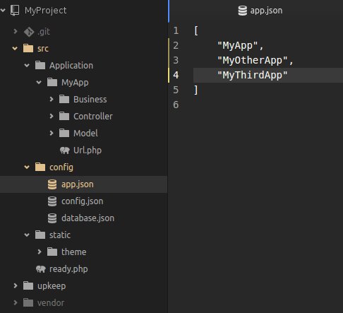

Willer Framework
Willer is a PHP framework.
Requisites & Dependencies
- PHP >= 7.1
- Swoole
Features
ORM
It's simple and power, try it:
$transaction = new Transaction();
$model_employee = new ModelEmployee($transaction);
$model_employeerole = new ModelEmployeeRole($transaction);
$model_employeerole->get([
'employeerole.id' => 7]);
$model_employee->save([
'employeerole_id' => $model_employeerole,
'name' => 'name of teste',
'description' => 'description of test',
'email' => 'email of test',
'phone' => '123456',
'dateCreate' => '2017-01-01 00:00:00',
'status' => true]);
$employee_list = $model_employee
->where([
'employee.status' => ['0','1'],
'employee.name' => 'name of test',
'employeerole.name' => 'role of test',
])
->like([
'employee.description' => 'my description ...',
])
->limit(1,10)
->orderBy(['employee.id' => 'desc'])
->execute([
'join' => 'left']);
$model_employee->get([
'employee.id' => 1,]);
$model_employeerole->get([
'employeerole.id' => 7]);
$model_employee->employeerole_id = $model_employeerole;
$model_employee->name = 'name of teste';
$model_employee->description = 'description of test';
$model_employee->email = 'email of test';
$model_employee->phone = '123456';
$model_employee->status = true;
$model_employee->save();
$model_employee->get([
'employee.id' => 2,]);
$model_employee->delete();
$model_employee->dumpQuery();
$model_employeerole->dumpQuery();
MVC
Simple architecture inspired in MVC applications, designed for agile and flexible development.
- MVC folder structure
Swoole
Event-driven asynchronous & concurrent & coroutine networking engine with high performance for PHP. GitHub - https://github.com/swoole/swoole-src
Bundle
Bundle apps into your project is simple
-
Configure App's into project
 -
Load with composer
"require": {
"php": ">=7.1",
"wborba/willer-core": "2.*",
"MyApp": "1.*",
"MyOtherApp": "1.*",
"MyThirdApp": "1.*"
}
Download & Install
-
GIT:
git clone https://github.com/williamborba/willer.git -
Composer:
composer create-project wborba/willer
License
The MIT License (MIT). Please see License File for more information.